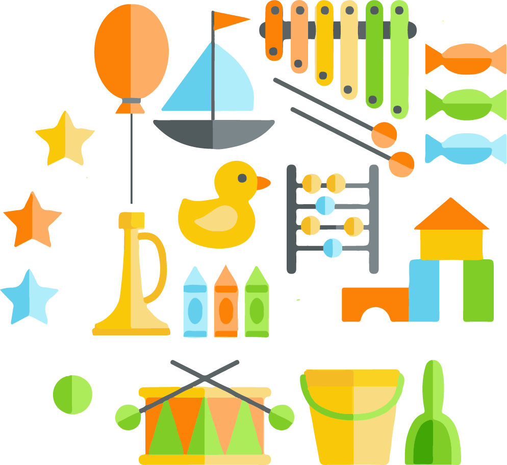

our initiatives
early childhood
Our ECE program has evolved over the past 10 years on our philosophy of hands-on learning. This philosophy is based on our learning experiences with pre-school children, with focus on all-round development- mental, physical and emotional. Our teaching method is from concrete to abstract- the known to the unknown.

Survey visit
Teacher Training
Demo Class
Facilitation visit
Resource Materials
The survey visit to understand the requirement